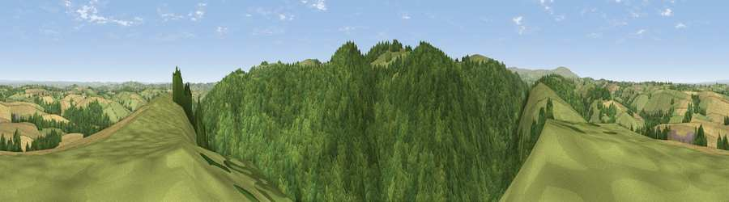

Viewpoint near Drewsteignton
#8287 in England · top 13% of its area beats it · near DrewsteigntonWhere it is
The exact computed spot (SX 75450 90075). Click the marker for map links.
The view, rendered

A 360° render of this exact spot computed from the terrain model, tree cover and land cover — summer colours, afternoon light, calibrated against photographs of famous viewpoints. Real trees, hedges and buildings will differ in detail.
The panorama
Grey silhouette: terrain skyline in each direction (720 bearings, Earth curvature and refraction included). Dashed green: skyline with trees (+15 m) and buildings (+8 m) as obstacles. Blue strip: how far the ground is visible on each bearing.
Where the view opens
Wedge length = distance to the farthest visible ground on that bearing (vegetation-aware). Rings at 10, 25 and 50 km.
What fills the view
49% woodland · 28% grassland · 23% cropland
Angular shares of the visible panorama (visual magnitude), not map area. Landscape diversity 0.46 (0–1 Shannon).
Key numbers
More beautiful places nearby
The staircase of upgrades: each row has a higher view potential than everything closer. Driving times are estimates from straight-line distance, calibrated against real road routing — check an actual route before setting out.
| Place | Direction | Drive | Score |
|---|---|---|---|
| Viewpoint near Crockernwell | E · 0 km | ~2 min | 69.6 |
| Viewpoint near Moretonhampstead | S · 1 km | ~4 min | 74.8 |
| Butterdon Hill | SSW · 2 km | ~5 min | 76.4 |
| Viewpoint near North Bovey | SSW · 8 km | ~16 min | 77.8 |
| Viewpoint near North Bovey | SSW · 8 km | ~16 min | 79.3 |
| Cairn | S · 11 km | ~21 min | 79.8 |
| Viewpoint near Haytor Vale | S · 12 km | ~22 min | 80.1 |
| Viewpoint near Buckland in the Moor | S · 17 km | ~30 min | 80.7 |
50.69694, -3.76489 · source: screening · position refined by local search. Computed location — check access rights before visiting.